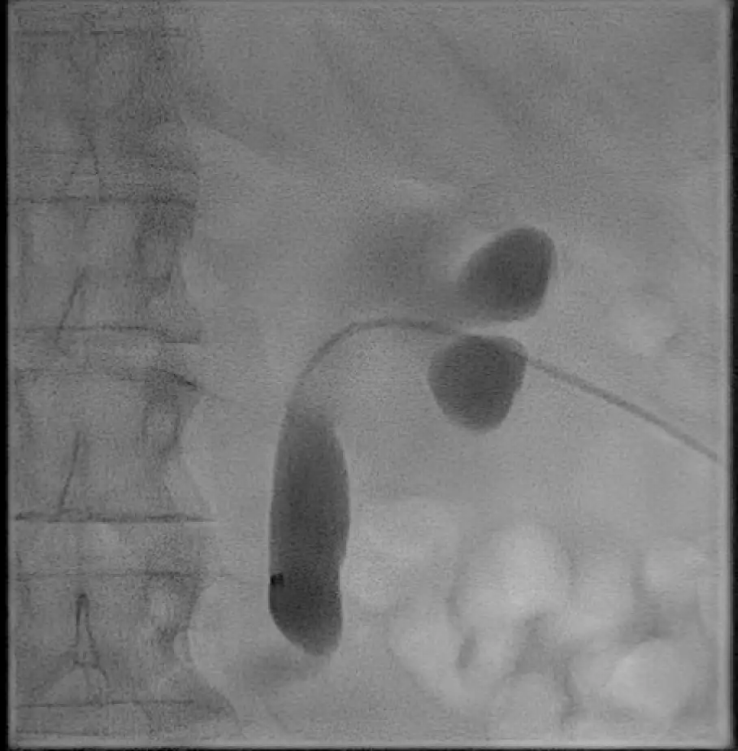
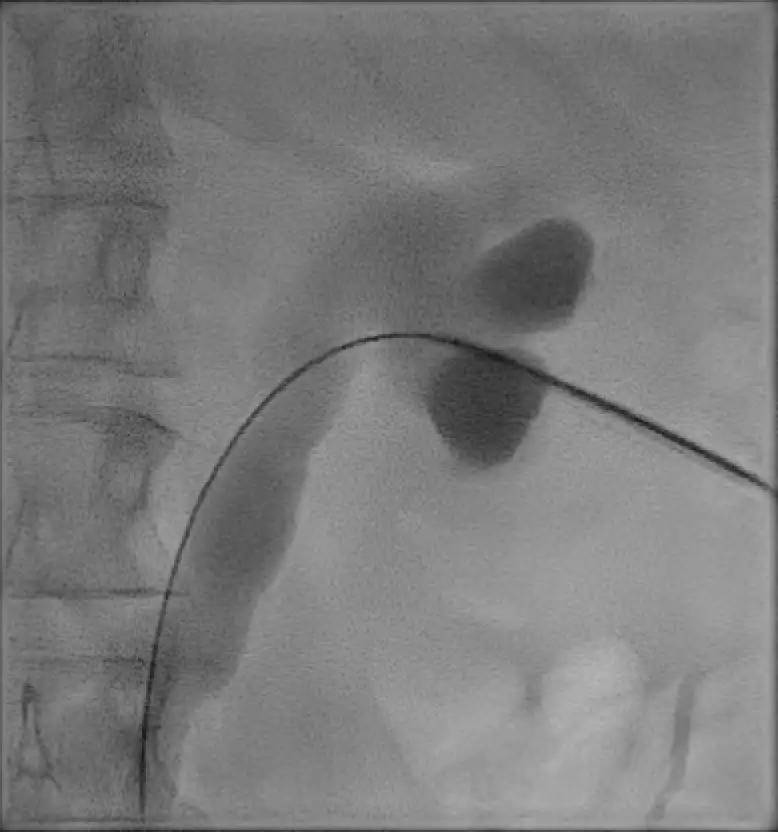
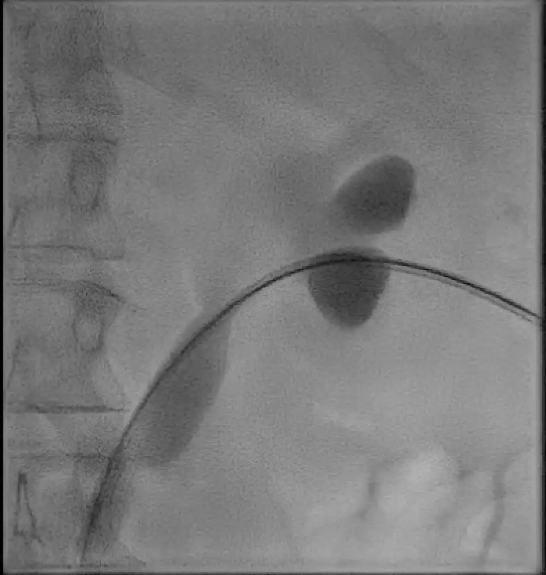
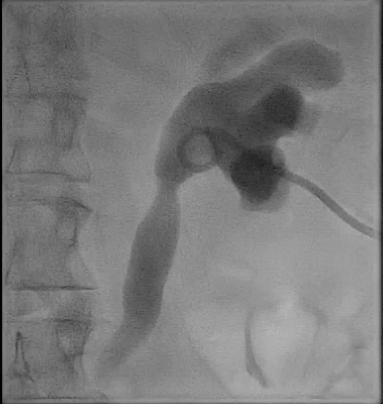

Percutane Nefrostomie
Echo- en doorlichtingsgeleide drainage van het nierbekken
Indicaties & Contra-indicaties
▾
Indicaties
- Gedaald eGFR door post-renale obstructie (relatief spoed)
- Pyonefrose / urosepsis (spoedindicatie)
- Urinedeviatie — bijv. bij fistels of hemorragische cystitis
- Toegang voor vervolginterventies — dubbel-J stent of PNL
Contra-indicaties
- INR >1.5 / trombocyten <50
- Geen veilig punctietraject
Pre-procedurele Checklist
▾
- Lab: INR, trombocyten, eGFR
- Nuchter: niet nodig tenzij sedatie gepland
- Beeldvorming: nierpositie beoordelen — hooggelegen nier verhoogt pleurapunctierisico bij punctie boven rib 12; colon descendens/ascendens buiten het traject?
- Antibiotica: ceftriaxon iv 2000 mg eenmalig. Bij urosepsis: behandelen conform protocol.
Materiaal
▾
| Materiaal | Specificatie | Aantal |
|---|
Stappenplan
▾
Voorbereiding
- 1Patiënt in buikligging of zijligging met kussen onder de buik.
- 2Naaldgeleider monteren op de echoprobe. Drain voorbereiden: mandrin/stilet door de drain voeren en bevestigen dat het systeem goed doorschuift.
Procedure
- 3Echo ter identificatie onderpoolscalix. Doelstelling: onderpoolscalix benaderen via Brodel's lijn — de avasculaire zone tussen de ventrale en dorsale arteriële takken.
- 4Lokale anesthesie met lidocaïne 1%, ca. 10 cc — voornamelijk huid en nierkapsel verdoven.
- 5Naaldgeleider op de probe plaatsen. Echogeleide punctie langs het door de geleider uitgetekende traject: eerst angionaald tot aan de nier. Vervolgens Chiba naald 22G door de angionaald de onderpoolscalix in. Aspiratie van urine — bij verdenking infectie kweek afnemen.
- 6Antegrade pyelografie onder doorlichting met contrast verdund 1 op 2 met NaCl — bevestiging positie en beoordeling anatomie verzamelsysteem. Verdund contrast voorkomt dat het materiaal wordt overschaduwd.
- 7Cope Mandril 0.018" voerdraad opvoeren via de Chiba naald, bij voorkeur tot in de ureter.
- 8Neff-set inbrengen over de voerdraad. Zodra de Neff in de calix ligt: sheath van de Neff-set afschuiven van de stilet — voorkomt perforatie van het pyelum. foto
- 9Amplatz voerdraad 0.035" opvoeren via de Neff-set, bij voorkeur tot in de ureter. foto
- 10Drain plaatsen over Amplatz met metalen stilet: standaard 8.5 Fr multipurpose drain. Bij slank/smal verzamelsysteem: 8.5 Fr Dawson-Muller. Krul positioneren in het pyelum. foto
- 11Contrastinjectie via drain ter bevestiging van de intraluminale positie in het pyelum. foto
- 12Drain locken. Fixatie aan huid met een transcutane teugelhechting (Mersilene of Prolene 2-0 op rechte naald) en drainfix pleister. Drainzak aansluiten.
Aandachtspunten
Urosepsis: Spoedindicatie — AB vóór aanvang. Minimale manipulatie: alleen drainage, geen uitgebreide diagnostiek tijdens acute procedure.
Hooggelegen nier: Punctie boven rib 12 verhoogt pleurapunctierisico — X-thorax na procedure bij twijfel.
Retrorenaal colon: Aanwezig bij ~4% — controleer op CT bij twijfel.
Draintype: Standaard 8.5 Fr multipurpose drain. Dawson-Muller alleen bij slank/smal pyelum.
Contrast verdunning: Gebruik 1 deel contrast op 2 delen NaCl bij antegrade pyelografie — voorkomt dat het verzamelsysteem volledig wordt overschaduwd en materiaal onzichtbaar wordt.
Complicaties
▾
| Complicatie | Kans | Management |
|---|---|---|
| Urosepsis | 1–3% | IV antibiotica, vochttoediening, drain controleren |
| Bloeding (macro-hematurie) | 2–5% | Meestal zelflimiterend; zelden embolisatie nodig |
| Drain dislocatie | 5–10% | Herplaatsing via bestaand tractus of nieuwe punctie |
| Pleuraal letsel | <1% | Vooral bij supracostale punctie; X-thorax/drainage |
| Colonperforatie | <0.2% | Conservatief of chirurgisch (zeldzaam) |
Nazorg
▾
- Drain open op zak laten lopen
- Wissel drain na 6–8 weken indien nog in situ en benodigd
- Bij koorts of forse toename hematurie: laagdrempelig contact opnemen
Standaardverslag
▾
Ter vergelijking: [datum/modaliteit]
Antistolling: [gestaakt / niet van toepassing]
Procedure onder antibiotische dekking.
Echo toont [bevinding verzamelsysteem].
Steriele omstandigheden. Echogeleid lokale anesthesie met lidocaïne 1%
10 ml. Echogeleid aanprikken onderpoolscalix [links/rechts] met Chiba
naald. Aspiratie van [heldere/troebele/purulente] urine. [Kweek afgenomen.]
Onder doorlichting over Cope Mandril voerdraad plaatsen Neff-set. Over
Amplatz voerdraad plaatsen 8.5 Fr multipurpose drain met krul in het
pyelum. Contrastinjectie ter bevestiging intraluminale positie in het pyelum.
Drain gelockt. Gefixeerd met transcutane hechting en drainfix pleister.
Drainzak aangesloten.
CONCLUSIE:
Plaatsing percutane nefrodrain [links/rechts].
NAZORG:
Drain open op zak laten lopen.
Bij koorts of forse toename hematurie laagdrempelig contact opnemen.
Afbeeldingen
▾

Neff-set opgevoerd over de voerdraad

Amplatz voerdraad opgevoerd via de Neff-set

Drain geplaatst met krul in het pyelum

Contrastinjectie ter bevestiging intraluminale positie